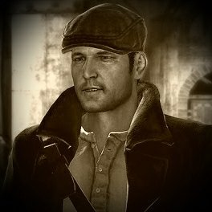
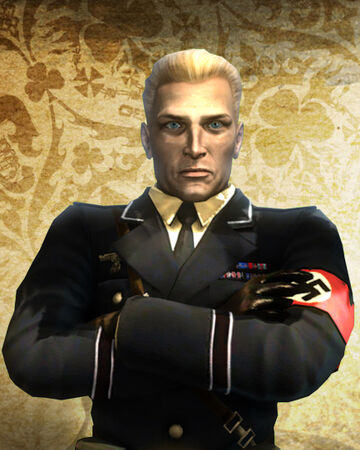

Sean Devlin

Kurt Dierke
Enredo
O jogo nos leva de volta ao período da Segunda Guerra Mundial. Na pele do protagonista Sean Devlin, o jogador deve deter os nazistas em plena ocupação da França.
Na história, Sean é um irlandês que faz parte de um grupo de corredores de Paris. Durante a última volta de uma corrida em Saarbrucken (Alemanha), a qual Sean lidera o primeiro lugar, o adversário Kurt Dierker atira no pneu de seu carro para vencer a prova. Inconformado, Sean e seu melhor amigo, Jules, invadem a mansão do competidor pilantra para dar o troco: eles roubam o seu carro de corrida e o arremessa penhasco abaixo.